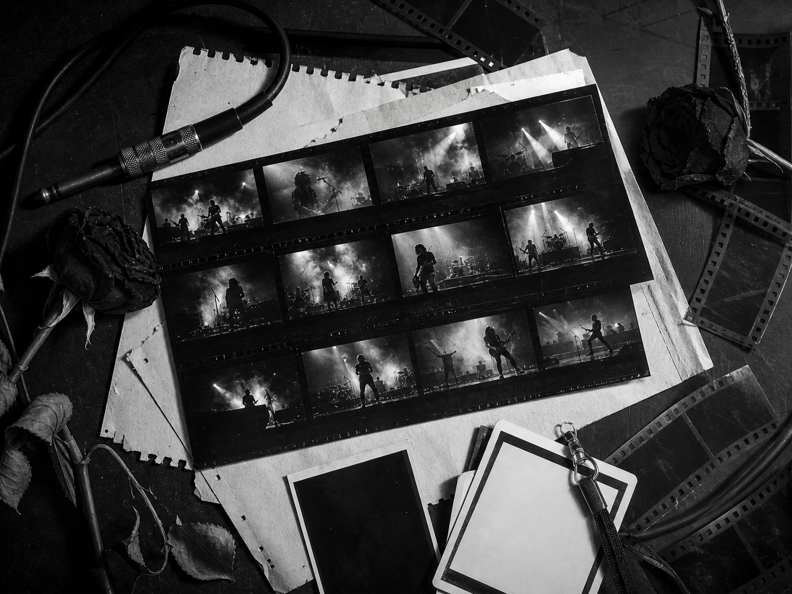

Structural Analysis of the Upcoming World Tour 024

The evolution of the sonic landscape requires a corresponding shift in visual geometry. We are redefining the infrastructure of performance.
Every tour era creates its own physical language. For this archive cycle, the stage has been designed as a modular field of light, shadow, and motion, with each section built to echo the emotional pressure of the catalog.
The production keeps the monochrome restraint of the original blueprint but expands it through scale: taller lighting grids, harsher silhouettes, tighter transitions, and a setlist structure that moves between intimacy and arena impact.
I. Spatial Dynamics
Curved lighting trusses sit above a split platform, allowing the performance to shift from a narrow central frame to a full-width wall of contrast. The resulting geometry keeps the band visible while letting each song carry its own visual architecture.
99"The blueprint is not a suggestion; it is the absolute foundation of the chaos we intend to unleash."
- Lead Architect G. Way
Archive sketches show two major stage states: a black-box opening configuration and a wider parade configuration for the final run. Both keep audience sightlines clean and push the lighting rig into the role of a moving structure.


II. Technical Specifications
The show file uses a three-act lighting map, with cold white beams for the opening sequence, hard backlight for mid-set cuts, and saturated red cues reserved for the final encore. The stage design is intentionally severe: every scenic element must earn its place.